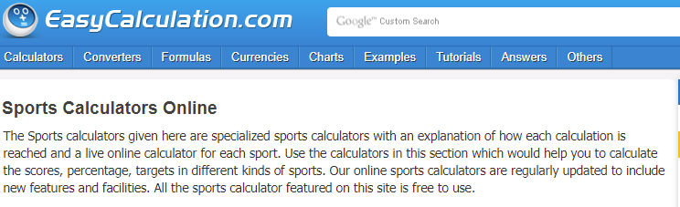

Goals of the Site
- Have a page and multiple calculators for baseball, hockey, and golf statistics
- Make it feel like a sports themed site
- Make each sport selection feel themed to that sport
Example Page
Content
Web Page Design:
The home page will have a description of what the site will be used for. There will be a section for each sport that will have a list of the statistics calculators that I plan on having. The sections will look similar to the sections that are on the example site but they backgrounds will have images of the sport correlating to each sport.
Other Pages:
The other pages will mirror the home page theme but also incorporate the theme of the sport selected for that calculator. If I clicked ERA Calculator, then it would bring up that calculator on a new page with the main theme with the theme of baseball incorporated.
Audinece
The target audience is going to be anyone who wants to watch sports and keeps track of the basic stat such as shots, goals, time played, and etc. They would then take these basic stats and open up this site so they could do quick calculations of stats that require a combination of these basic recorded stats.